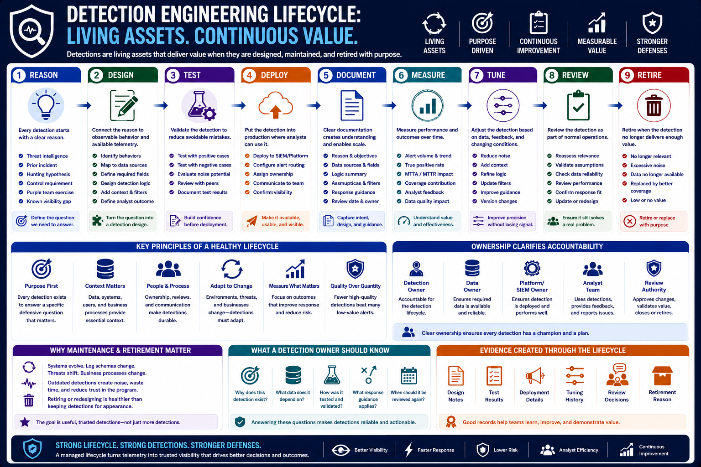

What Is Detection Engineering?
The Detection Engineering Lifecycle
Connecting to LMS... Progress: in progress
Version 1.0 | Date: 2026-06-16 | Educational overview of defensive detection engineering concepts.

Narration
Modern detection engineering treats detections as living assets. A detection is proposed, designed, tested, deployed, documented, measured, tuned, reviewed, and eventually retired when it no longer provides enough value.
The lifecycle begins with a reason for the detection. That reason may come from threat intelligence, a prior incident, a hunting hypothesis, a control requirement, a purple team exercise, or a known visibility gap.
Design work connects the reason to observable behavior and available telemetry. Engineers decide what fields are needed, how the logic should work, what context should be included, and how analysts should interpret the result.
Testing and deployment help prevent avoidable mistakes. Teams validate that a detection fires when expected, avoids obvious noise where possible, and presents useful information to the people who will use it.
Maintenance is the part that separates a durable program from a collection of old alerts. Environments change, log schemas change, business processes change, and threat patterns change. Mature teams review detections as part of normal operations.
Lifecycle management also clarifies ownership. Someone should know why a detection exists, which data it depends on, how it was validated, what response guidance applies, and when it should be reviewed again.
Retirement is part of the lifecycle too. If a detection no longer maps to relevant systems, creates recurring noise, or depends on unavailable data, retiring or redesigning it may be healthier than keeping it for appearance.
A healthy lifecycle creates evidence as well as alerts. Design notes, test results, review decisions, and tuning history help teams understand how the detection changed and why those changes were made.